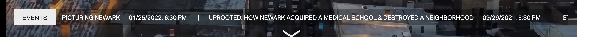

Advanced CSS: WDD 331
Week 5: News Ticker Task
Sample image:

My result:
I really like this class. I have definitely learned a lot in the past 5 weeks.
So far, the biggest takeaway have been declaring variables in scss, creating mixins, and the Atomic Design.
I also like that we are given oppotunities to build cool designs we find online.
It helps me learn better and faster. This is the end of my ticker.